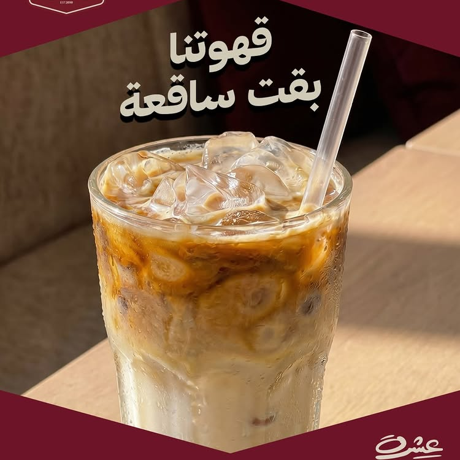
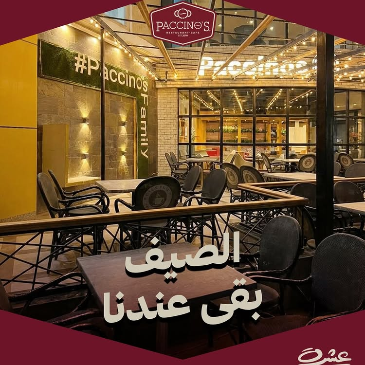
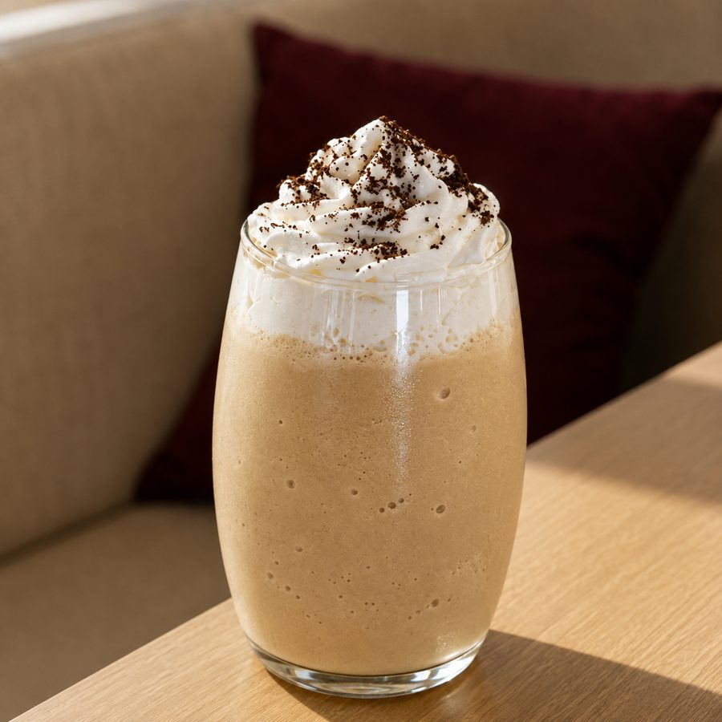
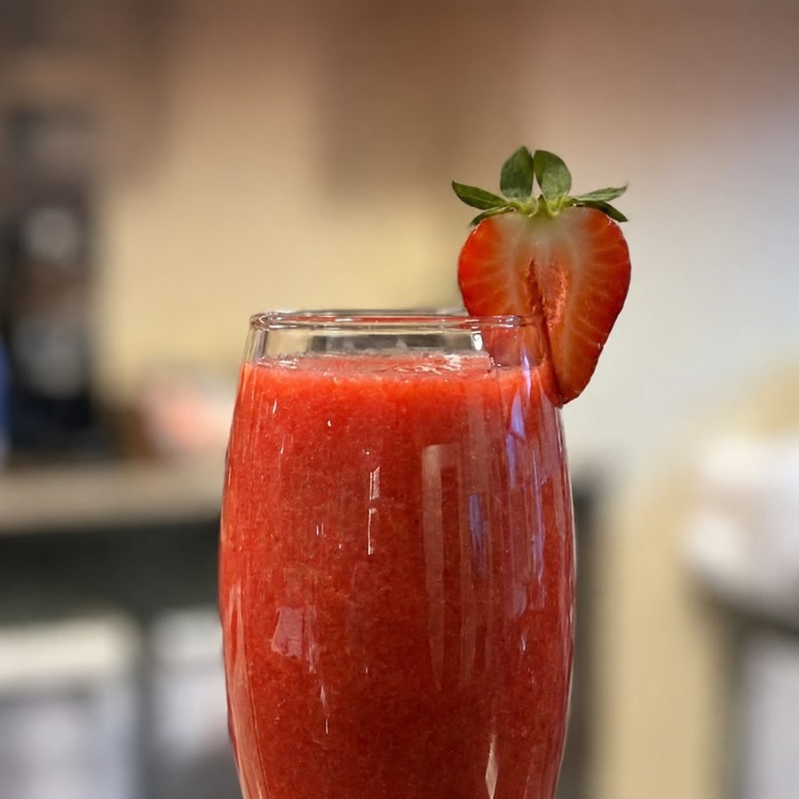

آيس كوفي
★قهوتنا ساقعة على مزاجك — من تصويرنا.

Coffee & Food Experience — باتشينوس عشرة من 2010. قهوة مختصة وأكل إيطالي في قلب المنيا.

قهوتنا ساقعة على مزاجك — من تصويرنا.

حاجة حلوة وتلج — كريمة وشوكولاتة.

موهيتو وسموذي وآيس لاتيه — تشكيلتنا الكاملة.
📍 فرع طه حسين
شارع طه حسين (أمام وابور النور)
ديليفري: 01007811378
📍 فرع المنيا الجديدة
الحي الثالث — مول كورنر بلازا
ديليفري: 01033777117
"One of the best places — high quality food with reasonable prices. The staff is so friendly, and the portions are generous. Always my favorite place ❤️"
"Tried the Watermelon Blast refresher on a hot day and it did not disappoint. Super refreshing!"
"القهوة عندهم ممتازة والمكان نظيف والخدمة سريعة — أنصح بيه جدًا."
شارع طه حسين (أمام وابور النور)، المنيا — والمنيا الجديدة، مول كورنر بلازا
📍 فرع طه حسين
📍 فرع المنيا الجديدة — مول كورنر بلازا